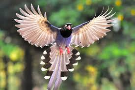

EXPLORE & EXPERIENCE
Back to HomeMammals
Warm-blooded vertebrates with mammary glands, hair or fur, and a four-chambered heart.

Fish
Aquatic vertebrates that breathe using gills, possess fins, and generally have scales.
Reptiles
Air-breathing, cold-blooded vertebrates with scaly bodies, mostly egg-laying.

Amphibians
Small vertebrates that need water or moist environments, with thin skin for breathing.
Invertebrates
Animals without a backbone, comprising over 90% of all living animal species.

Birds
Warm-blooded vertebrates with feathers, wings, and the only animals capable of flight in most species.